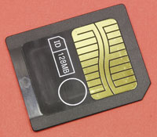
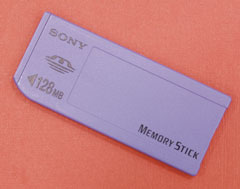
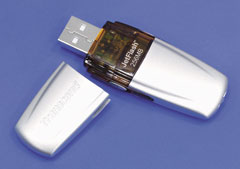
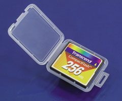
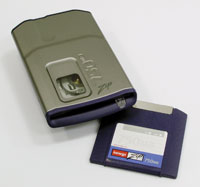
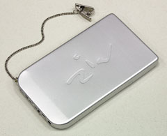

Олег Денисов, Сергей Назаров
Во времена первых ПК данные между компьютерами передавались на флоппи-дискетах - иные способы транспортировки и хранения информации пользователям "персоналок" были недоступны. Позднее для этой цели стали применять накопители Zip и CD-RW, жесткие диски и флэш-память. В итоге сегодня индустрия предлагает несколько типов переносных накопителей - каждый со своими плюсами и минусами, которые мы постарались представить в этом обзоре.
Среди протестированных накопителей присутствовали устройства трех категорий - накопители малой емкости (флэш-карты, USB-флэш-память), средней (Iomega Zip 750, накопители CD-RW) и большой (переносной жесткий USB-диск Hyundai ZIV2, "ноутбучные" 2,5-дюйм жесткие IDE-диски, 3,5-дюйм жесткие диски Serial ATA). Впрочем, это деление довольно условно, поскольку между накопителями разных категорий есть функциональное пересечение - они подходят для решения одних и тех же задач.
Сразу же отметим, что, помимо эксплуатационных (емкость, производительность, мобильность, надежность и т. д.) мы оценивали ценовые характеристики накопителей - для этого рассчитывалась стоимость 1 Гбайт форматированной емкости. Для накопителей со сменными носителями мы рассчитывали этот показатель для нескольких объемов данных, исходя из ситуаций, часто встречающихся на практике: перенос данных объемом 700 Мбайт (типичная ситуация - копирование CD-диска), оперативное резервирование данных объемом 1 Гбайт (создание резервной копии рабочих данных "среднестатистического" пользователя) и 10 Гбайт (резервное копирование рабочих данных "продвинутого" пользователя или небольшой рабочей группы), долгосрочное хранение данных объемом 600 Гбайт (ежемесячное архивирование данных объемом 10 Гбайт в течение всего срока работы накопителя вплоть до его морального устаревания - пять лет).
Поскольку мобильные накопители - это прежде всего внешние устройства, то при их выборе важно учитывать различия между современными периферийными интерфейсами. Поэтому обсуждение мы начнем с краткого описания последних.
USB 1.1, USB 2.0 и IEEE-1394
Сегодня на рынке ПК сосуществуют два конкурирующих интерфейса для подключения высокоскоростной периферии - USB и IEEE-1394. Исторически первым возник IEEE-1394 - спецификация последовательной шины FireWire (другое название - iLink), разработанная компанией Apple в качестве альтернативы SCSI-шине, в 1995 г. была утверждена в виде стандарта под названием IEEE-1394. Эта шина может работать в трех режимах - со скоростью передачи данных до 100, 200 и 400 Мбит/с.
На текущий момент интерфейсом IEEE-1394 оснащаются компьютеры Apple, ноутбуки и цифровые видеокамеры, но он так и не стал стандартом "де факто" для IBM PC-совместимых систем. Очень немногие наборы микросхем для системных плат ПК имеют встроенный контроллер IEEE-1394, причем в "мэйнстрим"-наборах его нет. Поэтому системные платы редко имеют встроенный интерфейс IEEE-1394 - для этого на плате пришлось бы распаивать дополнительный контроллер IEEE-1394, и для организации портов IEEE-1394 приходится устанавливать дополнительную плату расширения.
Первая спецификация последовательной USB-шины (Universal Serial Bus), получившая название USB 1.0, появилась в 1996 г., версия USB 1.1 вышла в 1998 г., а USB 2.0 - в 2000 г. Пропускная способность шин USB 1.0 и USB 1.1 - до 12 Мбит/с, USB 2.0 - до 480 Мбит/с. Как видно, USB 1.0 и USB 1.1 не могут конкурировать с IEEE-1394 по скорости работы, и последний долгое время оставался единственным скоростным периферийным интерфейсом - фактически до 2001 г., когда на рынке стали появляться первые платы расширения с портами USB 2.0. Но массовое внедрение интерфейса USB 2.0 на рынке ПК началось только летом-осенью 2002 г., когда основные поставщики наборов системной логики - компании Intel и VIA встроили в них соответствующие контроллеры. Скорее всего, в будущем USB 2.0 вытеснит IEEE-1394 в этом секторе индустрии и станет отраслевым стандартом.
Однако производители периферийных устройств пока не спешат переходить с интерфейса USB 1.1 на USB 2.0, хотя в некоторых случаях это жизненно необходимо. Как показали испытания, максимальная скорость передачи данных по шине USB 1.1 составляет 1 Мбайт/с, тогда как скорость чтения данных с флэш-карт - более 4 Мбайт/с, с дисков Iomega Zip 750 Мбайт - более 6 Мбайт/с, с CD-дисков - более 7 Мбайт/с. Поэтому при использовании внешних USB-устройств для работы с этими носителями необходимо выбирать накопители с интерфейсом USB 2.0 и подключать их к соответствующему порту. Кстати, при проведении тестирования мы не смогли найти накопители для работы с флэш-картами с интерфейсом USB 2.0, поэтому использовали флэш-накопители с интерфейсом IEEE-1394.
Отметим также, что теоретически максимальная скорость передачи данных по шине USB 2.0 и IEEE-1394 равна соответственно 60 Мбайт/с (480 Мбит/с) и 50 Мбайт/с (400 Мбит/с), но на практике она определяется скоростью работы USB/IEEE-1394-контроллеров и контроллеров-мостов (например, USB-IDE) и составляет 20 Мбайт/с для USB 2.0 и 20-40 Мбайт/с для IEEE-1394. Поэтому пропускной способности интерфейса USB 2.0, например, вполне достаточно для подключения внешних CD-носителей (максимальная скорость чтения - 52X * 0,150 Мбайт/с = 7,8 Мбайт/с), но не хватает для работы с DVD-дисками (16X * 1,385 Мбайт/с = 22,2 Мбайт/с) и жесткими дисками.
Методика тестированияСкорость работы накопителей измеряли двумя способами. Первый заключался в том, чтобы измерить производительность устройств при выполнении некоторых типичных операций - запись/чтение одного файла большого объема или набора из большого количества небольших файлов. Тесты на скорость записи/чтения одного файла большого объема позволяют оценить максимальную реальную скорость работы накопителей, так как при этом не тратится время на поиск данных, "разбросанных" по всему адресному пространству накопителя, - в этом случае фактически измеряется реальная скорость последовательной записи/чтения данных. Тесты на скорость записи/чтения набора из большого количества небольших файлов, наоборот, позволяют оценить минимальную реальную производительность накопителей, так как при этой операции много времени тратится на поиск и "перемещение" от одного участка адресного пространства к другому; таким образом, измеряется реальная скорость записи/чтения данных при случайном доступе. Дополнительно измерялась скорость стирания данных и в некоторых случаях - скорость форматирования носителей под файловую систему. Второй метод заключался в измерении производительности накопителей с помощью различных синтетических тестовых пакетов. Для измерения быстродействия флэш-карт и флэш-памяти мы использовали: тестовый файл и тестовый набор файлов объемом 122 Мбайт (460 файлов, 107 директорий); тесты из пакета HD Tach 2.61: на скорость передачи данных по шине в burst-режиме (рассчитывается скорость передачи данных в этом режиме - Read Burst Speed), на скорость последовательной записи/чтения данных (регистрируется график зависимости скорости записи/чтения данных от их расположения в логическом адресном пространстве носителя, рассчитывается средняя - Write/Read Speed Average, максимальная - Write/Read Speed Maximum - и минимальная - Write/Read Speed Minimum - скорость записи/чтения) и тест на скорость случайного доступа (рассчитывается среднее время случайного доступа к данным на носителе - Random Access Time); дисковые тесты из пакета ZD WinBench 99 2.0 - Disk Transfer Rate, тест на скорость последовательного чтения (регистрируется график зависимости скорости чтения данных от их расположения в логическом адресном пространстве носителя) и Disk Access Time, тест на скорость случайного доступа (рассчитывается среднее время случайного доступа к данным на носителе). Все флэш-карты были протестированы на однофункциональных (обеспечивается работа с флэш-картами только одного типа) накопителях производства DataFab с интерфейсом IEEE-1394, которые подключались к IEEE-1394 адаптеру ConnectCom (Advansys) ASB30400. Для измерения скорости работы с дисками Iomega Zip 750 Мбайт, 48X CD-R 700 Мбайт, 24X CD-RW 650 Мбайт* (для работы с ними применялись соответственно накопители Iomega Zip 750 Мбайт USB 2.0 и Plextor PleXWriter 48/24/48U PX-W4824TU) мы использовали тестовый файл и набор файлов объемом 122 Мбайт; тестовый файл и набор файлов объемом 695 Мбайт (3437 файла, 476 директорий); тестовый набор файлов объемом 675 Мбайт (для диска Iomega Zip 750 Мбайт, поскольку набор файлов 695 Мбайт на этот носитель не помещался); тестовый набор файлов объемом 525 Мбайт (для заполнения "под завязку" диска CD-RW 650 Мбайт в режиме пакетной записи, так как форматирование под файловую систему UDF "съедает" на этом носителе более 110 Мбайт емкости). Для "прожигания" CD-дисков в формате ISO 9660 и UDF применялись соответственно пакеты Nero Burning Rom 5.5.9.14 и Nero InCD 3.37.
* На момент проведения тестирования диски 24X CD-RW емкостью 700 Мбайт не были доступны. Кроме того, для диска Iomega Zip 750 Мбайт использовались тесты из пакетов HD Tach и ZD WinBench, а для CD-дисков - из пакетов Nero CD Speed 1.01.3 (для получения графиков скорости записи) и GpBench/CD 2.0 (для регистрации графиков чтения и измерения времени случайного доступа). Для испытания внешнего USB-накопителя на жестком диске Hyundai ZIV2, "ноутбучных" 2,5-дюйм жестких дисков Fujitsu MHR2030AT и Toshiba MK4019GAX и "стандартного" 3,5-дюйм жесткого Serial ATA-диска Seagate Barracuda Serial ATA V ST3120023AS использовались тестовые файлы и наборы файлов объемом 122 и 695 Мбайт и тесты из пакетов HD Tach и ZD WinBench. Помимо перечисленного ПО, в ходе испытаний использовались программы Intel Ultra ATA Companion (входит в состав Intel Application Accelerator) и Nero InfoTool 1.02 - для сбора справочной информации соответственно о характеристиках EIDE/ATAPI-интерфейса накопителей и о функциональных возможностях CD-накопителя. Все тесты выполнялись под управлением ОС Microsoft Windows XP Professional Build 2600 с Service Pack 1 и установленными драйверами НМС системной платы Intel Chipset Software Installation Utility 4.00.1013 и видеоплаты NVIDIA Detonator XP 30.82 и UDMA-драйверами Intel Application Accelerator 2.2.0.2126 при видеорежиме с разрешением 1024x768, глубиной цвета 32 бит и частотой кадровой развертки 85 Гц. Мы использовали следующее стендовое оборудование: процессор Intel Pentium 4 2,0A ГГц (кэш L2 512 Кбайт), системную плату Gigabyte GA-8INXP (набор микросхем Intel E7205) с встроенными интерфейсами USB 2.0 и Serial ATA, два 256-Мбайт модуля памяти DDR333 SDRAM производства Transcend, графический адаптер ASUS V9280S на наборе микросхем NVIDIA GeForce4 Ti 4200-8X с 128 Мбайт видеопамяти и жесткий диск Seagate Barracuda ATA V ST3120023A емкостью 120 Гбайт. |
Флэш-память
Флэш-память - разновидность памяти EEPROM, ее полное название - Flash Erase EEPROM (Electronically Erasable Programmable ROM) можно перевести как "быстро стираемое электрически стираемое программируемое постоянно запоминающее устройство". Другими словами, флэш-память - это энергонезависимая ("постоянно запоминающее устройство", т. е. при хранении данных энергия не потребляется) перезаписываемая ("электрически стираемое программируемое", т. е. данные можно стереть и записать заново при помощи электрического тока) память, содержимое которой можно быстро стереть (Flash Erase).
Надо еще добавить, что флэш-память - это полупроводниковая память, причем особого типа. Ее элементарная ячейка, в которой хранится один бит информации, представляет собой не конденсатор, а полевой транзистор со специальной электрически изолированной областью, которую называют "плавающим затвором" (floating gate). Электрический заряд, помещенный в эту область, способен сохраняться в течение многих лет. При записи одного бита данных ячейка заряжается, т. е. заряд помещается на плавающий затвор, при стирании - заряд снимается с плавающего затвора и ячейка данных разряжается.
Преимущества флэш-памяти по сравнению с другими средствами переноса и хранения данных очевидны - высокая надежность и ударопрочность (из-за отсутствия движущихся компонентов и простоты механической конструкции носителей и накопителей), малое энергопотребление, компактность. Однако у нее есть и недостатки - ограниченное количество циклов перезаписи (от 10 тыс. до 1 млн) и относительно медленная работа.
Последнее обстоятельство связано с тем, что в работе логики флэш-памяти есть одна особенность. Перезаписать содержимое одной отдельно взятой ячейки флэш-памяти нельзя - можно стереть содержимое всей микросхемы памяти (именно поэтому эту память назвали "быстро стираемой") или стереть/записать содержимое блока из нескольких ячеек. Поэтому изменение содержимого одного бита/байта данных происходит медленно: сначала блок данных считывается с микросхемы флэш-памяти в буфер, потом этот блок стирается на микросхеме, затем в буфере переписывается нужный бит/байт, после чего блок данных снова записывается на микросхему.
Флэш-память появилась давно - первые образцы были разработаны компанией Toshiba еще в 1984 г., однако массовое ее использование началось только несколько лет назад - с появлением цифровых фотокамер. Сейчас флэш-память с каждым годом все активнее используется для хранения и переноса пользовательских данных, и в ближайшее время, судя по всему, этот рынок будет активно развиваться. На сегодня производители выпускают накопители на базе флэш-памяти нескольких типов - это карты Compact Flash, SmartMedia, MultiMedia Card, SecureDigital Card, Memory Stick и USB-ключи.
ATA Flash. Это были первые накопители на флэш-памяти, появившиеся на рынке. Накопители ATA Flash изготавливаются в виде стандартных карт PC Card. Помимо микросхем флэш-памяти в них устанавливается ATA-контроллер, и при работе они эмулируют обычный IDE-диск. Интерфейс таких карт - параллельный. Карты ATA Flash в настоящее время используются крайне редко.
Compact Flash (CF). Эти карты были предложены компанией SanDisk в качестве более компактной и удобной альтернативы ATA Flash. Поэтому разработчики стандарта CF предусмотрели возможность работы этих карт в двух вариантах: в первом случае они функционируют как обычные устройства PC Card и их интерфейс "превращается" в шину PC Card, во втором - как жесткие IDE-диски и их интерфейс работает как ATA-шина.
Карты CF впервые появились в 1994 г. Все они имеют 50-контактный параллельный интерфейс. Существуют карты CF двух типов - Type I и Type II; последние на 2 мм толще и появились только потому, что раньше корпуса карт Type I не позволяли разместить внутри флэш-память большого объема. В настоящее время такой необходимости нет, и карты Type II постепенно уходят с рынка. Отметим, что в накопители для карт Type II можно устанавливать карты Type I, но обратное невозможно.
SmartMedia (SM). Конструкция этих карт чрезвычайно проста: в них нет встроенного контроллера интерфейса, по сути это одна или две микросхемы флэш-памяти, "упакованные" в пластиковый кожух. Стандарт SM был разработан компаниями Toshiba и Samsung в 1995 г. Интерфейс карт SM - параллельный, 22-контактный, но из них для передачи данных используется только восемь линий.
|  | Флэш-карта PQI SmartMedia 128 Мбайт.
|
MultiMedia Card (MMC). Карты имеют 7-контактный последовательный интерфейс, который может работать на частоте до 20 МГц. Внутри пластикового корпуса размещается микросхема флэш-памяти и контроллер MMC-интерфейса. Стандарт MMC предложен в 1997 г. компаниями Hitachi, SanDisk и Siemens.
SecureDigital Card (SD). Это самый молодой стандарт флэш-карт: он был разработан в 2000 г. компаниями Matsushita, SanDisk и Toshiba. Фактически SD - это развитие стандарта MMC, поэтому карты MMC можно устанавливать в накопители SD (обратное неверно). Интерфейс SD - 9-контактный, последовательно-параллельный (данные могут передаваться по одной, двум или четырем линиям одновременно), работает на частоте до 25 МГц. Карты SD оснащаются переключателем для защиты содержимого от записи (стандартом предусмотрена и модификация без такого переключателя).
Memory Stick (MS). Стандарт флэш-карт с 10-контактным последовательным интерфейсом, работающим на частоте до 20 МГц, и переключателем для защиты от записи. Memory Stick активно продвигается на рынок компанией Sony, которая предложила его в 1998 г.
|  | Флэш-карта Sony Memory Stick 128 Мбайт.
|
USB-флэш-память. USB-память - совершенно новый тип носителей на флэш-памяти, появившийся на рынке в 2001 г. По форме USB-память напоминает брелок продолговатой формы, состоящий из двух половинок - защитного колпачка и собственно накопителя с USB-разъемом (внутри него размещается одна или две микросхемы флэш-памяти и USB-контроллер).
|  | Флэш-память Transcend JetFlashA 256 Мбайт.
|
Работать с USB-памятью очень удобно - для этого не требуется никаких дополнительных устройств. Достаточно иметь под рукой ПК под управлением Windows с незанятым USB-портом, чтобы за пару минут "добраться" до содержимого этого накопителя. В худшем случае вам придется установить драйверы USB-памяти, в лучшем - новое USB-устройство и логический диск появятся в системе автоматически. Возможно, что в будущем USB-память станет основным типом устройств для хранения и переноса небольших объемов данных.
Тестирование флэш-карт
Основные характеристики протестированных нами флэш-карт приведены в табл. 1, результаты тестирования - в табл. 2. Бесспорным лидером по производительности среди них была CF-карта Transcend Ultra Performance 25X CompactFlash 256 Мбайт, которую можно по праву считать эталоном скорости современных флэш-накопителей. Скорость последовательной/случайной записи у этой флэш-карты достигает 3,6/0,8 Мбайт/с, чтения - 4,0/3,7 Мбайт/с.
|  |  |
| Флэш-карта Transcend Ultra Performance 25X CompactFlash 256 Мбайт.
|
Таблица 1. Флэш-карты и флэш-память - технические характеристики и цены
Необходимо подчеркнуть, что сегодня на рынке предлагаются флэш-карты разных поколений, которые сильно отличаются по скорости работы. Например, протестированные CF-карты SanDisk - это представители предыдущего поколения, и по скорости работы они проигрывают Transcend Ultra Performance 25X CompactFlash 256 Мбайт до 4 раз!
Таблица 2. Результаты тестирования флэш-карт
Интересно также отметить, что скорость работы CF-карт замедляется с увеличением объема, что хорошо видно на примере флэш-карт SanDisk CompactFlash 256 Мбайт и 512 Мбайт. Двукратный рост емкости приводит к снижению производительности на 30% за исключением скорости случайной записи, которая выросла в 2,5 раза - что выглядит довольно странно.
Скоростные характеристики CF-карт сильно зависят от производителя. У Kingston CompactFlash 256 Мбайт - скорость записи невелика (последовательная/случайная запись - 1,4/0,3 Мбайт/с), но по скорости чтения она была лидером (4,4/3,8 Мбайт/с). Карта PQI Hi-Speed CompactFlash 256 Мбайт продемонстрировала среднюю производительность в обоих случаях: запись - 2,1/0,7 Мбайт/с, чтение - 3,8/3,3 Мбайт/с. Карты SanDisk CompactFlash (256 и 512 Мбайт) работали очень медленно: запись - 1,1/0,2 и 0,9/0,5 Мбайт/с, чтение - 2,3/2,1 и 1,8/1,7 Мбайт/с. А карта Transcend Ultra Performance 25X CompactFlash 256 Мбайт записывала и считывала данные одинаково хорошо.
Отметим, что если CF-карта используется в цифровой фотокамере, то для нее в первую очередь важна скорость последовательной записи - чем она выше, тем быстрее фотокамера вернется в рабочее состояние после "захвата" кадра и "сброса" его на флэш-карту. Впрочем, скорость чтения CF-карты в этом случае тоже важна, правда, не так критична - чем быстрее считываются данные, тем быстрее будет работать фотокамера в режиме просмотра отснятого материала.
Если сравнивать производительность протестированных флэш-карт разных типов, то лидерами, конечно, будут CF-карты, за ними идут SM- и MS-карты - последние, кстати, неоправданно дороги.
Что же касается USB-флэш-памяти, то это, несомненно, более удобное решение для переноса данных, чем флэш-карты - не требуется дополнительный флэш-накопитель. Однако производительность протестированных накопителей этого типа - Transcend JetFlash 256 Мбайт и Transcend JetFlashA 256 Мбайт - ограничивалась низкой пропускной способностью интерфейса USB 1.1, поэтому их показатели в тестах на скорость работы были довольно скромными. Если USB-флэш-память оснастить интерфейсом USB 2.0, то по "скорострельности" эти накопители, конечно, не уступят лучшим флэш-картам.
Если сравнивать CF-карты с накопителями других типов, то окажется, что флэш-память - совсем на такая медленная, как это принято считать. По производительности самые быстрые образцы флэш-памяти (в качестве эталона возьмем карту Transcend Ultra Performance 25X CompactFlash 256 Мбайт) сравнимы с Iomega Zip 750 Мбайт, а по скорости последовательной записи даже обгоняют этот накопитель более чем в 1,5 раза, диски CD-RW - в 2 раза.
Кстати, превосходство флэш-памяти над Iomega Zip 750 и дисками CD-RW по скорости последовательной записи лишний раз подчеркивает, что ее разработчики в первую очередь стремились увеличить именно эту величину, поскольку флэш-память изначально предназначалась для использования в цифровых фотокамерах.
В итоге можно заключить, что флэш-память - бесспорный лидер по надежности, мобильности и энергопотреблению среди мобильных накопителей небольшой и средней емкости, обладающий к тому же неплохим быстродействием и достаточным объемом (на сегодня на рынке уже доступны флэш-карты емкостью до 2 Гбайт). Несомненно, это весьма перспективный тип накопителей, однако их широкое использование пока сдерживается высокими ценами и на сегодня оправданно только в том случае, если вам надо переносить небольшие массивы данных объемом до 256/512 Мбайт.
Внешние накопители Iomega Zip
Не так давно Zip-накопители первого поколения из семейства Iomega Zip 100 Мбайт были "хитами" продаж и лидировали среди мобильных накопителей для переноса данных. Эти устройства обеспечивали работу с магнитными 100-Мбайт Zip-дисками и завоевали огромную популярность среди пользователей как довольно недорогие и удобные переносные накопители - на тот момент рынок фактически не мог предложить других конкурентоспособных решений. Позднее победное шествие Zip-накопителей продолжили модели семейства Iomega Zip 250 Мбайт - с большей емкостью дисков. Но в связи с обвальным снижением цен на накопители и диски CD-R/CD-RW в течение последних двух лет и перехода этих устройств в разряд массовых про Zip-накопители основательно подзабыли.
Недавно компания Iomega попыталась "отыграться" и наладила производство Zip-накопителей третьего поколения - Iomega Zip 750 Мбайт. В рамках этого семейства выпускаются две внешние модели в мобильном исполнении - с интерфейсами USB 2.0 и IEEE-1394.
|  | Накопитель Iomega Zip 750 Мбайт USB 2.0.
|
Эти Zip-устройства могут работать как с "родными" 750-Мбайт дисками, так и с носителями предыдущих серий емкостью 250 и 100 Мбайт (последние, однако, можно только читать). Характеристики Iomega Zip 750 Мбайт (и конкурента - внешнего SCSI-накопителя Plextor PleXWriter 48/24/48U PX-W4824TU) приведены в табл. 3.
Таблица 3. Внешние накопители Iomega Zip 750 и CD-RW - технические характеристики и цены
| Iomega Zip 750 Мбайт USB 2.0 | Plextor PleXWriter 48/24/48U PX-W4824TU | |
| Розничная цена*, долл. | 160 | 205 |
| Форматированная емкость, тип файловой системы | 717 Мбайт, FAT16 | 702 Мбайт, ISO 9660/534 Мбайт, UDF** |
| Интерфейс | USB 2.0 | USB 2.0 |
| Максимальная скорость чтения/записи, Мбайт/с | 7,5 Мбайт/с/н/д | 3,0-7,2/3,0-7,2 / 3,6** |
| Время поиска, мс | 29 | 65 |
| Скорость вращения, об/мин | 3676 | н/д |
| Емкость буфера, Мбайт | н/д | 4 |
| Время наработки на отказ, ч | н/д | 60 000 |
| Устойчивость к ударам в рабочем/нерабочем состоянии | 7,5G (11 мс)/10,0G (11 мс) | н/д |
| Устойчивость к вибрации в рабочем/нерабочем состоянии | 0,7G (5-17 Гц), 0,25G (17-225 Гц)/1,2G (7-28 Гц), 2G (28-62 Гц), 5G (62-225 Гц) | н/д |
| Габариты (ширина x длина x высота), мм, масса, кг | 110x175x21, 0,18 | 169x247,5x58, 2,2 |
| Носитель, розничная цена*, долл. | Iomega Zip 750 Мбайт, 13 | Plextor 48X Multispeed CD-R 700 Мбайт 80 мин, 0,6/Plextor Ultra Speed 24X CD-RW 650 Мбайт 74 мин, 1,7 |
| Стоимость 1 Гбайт емкости, долл.: | ||
| при переносе 700 Мбайт данных | 253 | 301/305** |
| при оперативном резервировании 1 Гбайт данных | 186 | 206/208** |
| при оперативном резервировании 10 Гбайт данных | 35,5 | 21,4/23,2** |
| при долгосрочном хранении 600 Гбайт данных | 18,8 | 1,22/3,00** |
| * Ориентировочная розничная цена на 15.04.03; ** для дисков CD-R/CD-RW. | ||
По итогам тестирования (табл. 4) в скорости записи Iomega Zip 750 Мбайт сегодня уже уступает CF-картам - до 70%, на операциях последовательного чтения пока обгоняет их на величину до 40%, но при случайном чтении на столько же проигрывает - до 35%. Более того, Iomega Zip 750 Мбайт проигрывает и по ценовым характеристикам при переносе небольших массивов данных (256-512 Мбайт). Поэтому в качестве мобильного накопителя при работе с данными такого объема выгоднее использовать CF-карты.
По скорости последовательной записи Iomega Zip 750 Мбайт уступает дискам CD-R в 1,5 раза, но пока обгоняет носители CD-RW на 30% (в ближайшее время эта разница, скорее всего, сойдет на нет, так как скорость записи дисков CD-RW еще не достигла своего предела). По скорости последовательного чтения Iomega Zip 750 Мбайт обходит диски CD-R на 20%, CD-RW - в 1,5 раза. При случайном чтении производительность Zip-накопителя примерно равна скорости работы дисков CD-R. Таким образом, в целом производительность Iomega Zip 750 Мбайт сравнима со скоростью работы накопителей CD-RW.
Что касается ценовых характеристик, то по стоимости 1 Гбайт емкости при объеме данных 1 Гбайт Iomega Zip 750 Мбайт выигрывал у соперничавшего с ним Plextor PleXWriter 48/24/48U PX-W4824TU. Кроме того, полноценные 5,25-дюйм накопители CD-RW во внешнем исполнении значительно массивнее Iomega Zip 750 Мбайт, поэтому для переноса данных объемом в 1-5 Гбайт выгоднее и удобнее использовать Zip-устройства.
Однако Iomega Zip значительно проигрывает накопителям CD-RW по стоимости 1 Гбайт емкости при объеме данных 10 Гбайт - в 1,5-1,7 раза. Кроме того, оптические носители CD-R/RW надежнее в эксплуатации, чем магнитные Zip-диски. Поэтому Iomega Zip 750 Мбайт не стоит использовать для резервного копирования данных объемом более 10 Гбайт и тем более для создания долгосрочных архивов.
С другой стороны, при объеме "транспортируемых" данных около 5 Гбайт общая стоимость мобильного решения на базе Iomega Zip 750 Мбайт приближается к цене USB-диска Hyundai ZIV2, так что для переноса данных большего объема выгоднее применять последний.
В итоге нишу Iomega Zip 750 Мбайт можно, пожалуй, определить так - это мобильный накопитель для переноса данных объемом 1-5 Гбайт. При меньших объемах выгоднее CF-карты, при больших - Hyundai ZIV2. Кроме того, его не стоит использовать для резервного копирования данных объемом более 10 Гбайт (накопители CD-RW или Hyundai ZIV2 справятся с этим лучше) или для архивирования данных - диски CD-R все-таки надежнее Zip-носителей.
Таблица 4. Результаты тестирования внешних накопителей и жестких дисков
Внешние накопители CD-RW
В течение последних двух лет накопители CD-RW прочно удерживают лидерство среди персональных устройств хранения и переноса данных. Напомним, что эти накопители способны "прожигать" однократно записываемые CD-R и многократно перезаписываемые диски CD-RW. Для хранения информации в носителях CD-R используется "запоминающий" слой из органического полимера, "темнеющий" при нагревании лазерным лучом, а в дисках CD-RW поверхность изменяет фазовое состояние (из кристаллического в аморфное и наоборот) при разогреве лазером и быстром охлаждении.
На текущий момент накопители CD-RW почти достигли пика своего технологического развития, и через два-три года следует ожидать начала их вытеснения "пишущими" DVD-накопителями. Однако до этого момента рынок CD-RW будет развиваться довольно активно. Несмотря на то, что скорость записи дисков CD-R возросла до 52X (7,8 Мбайт/с, 1X = 150 Кбайт/с) и в будущем вряд ли будет увеличиваться, высокоскоростные носители CD-R и средства их "прожигания" на больших скоростях пока оптимизированы недостаточно, и здесь изготовителям есть над чем поработать. Кроме того, скорость записи дисков CD-RW (на сегодня максимум 24X - 3,6 Мбайт/с) в ближайшие год-полтора, возможно, вырастет.
Сегодня выпускается два типа переносных накопителей CD-RW, полученных методом "трансформации" внутренних 5,25-дюйм моделей, - с интерфейсом USB и IEEE-1394. Конечно, формально к этому списку следует добавить еще внешние SCSI-накопители, но вряд ли их можно назвать мобильными в широком смысле этого слова: во-первых, они очень дороги (например, цена внешнего 40X/12X/40X-скоростного SCSI-накопителя CD-RW Plextor PleXWriter 40/12/40S PX-W4012TSe на момент подготовки этого обзора в среднем составляла 350 долл.), во-вторых, SCSI-интерфейс непопулярен, так как используется практически только в серверах и мощных профессиональных рабочих станциях. Отметим также, что в будущем производители, возможно, начнут выпуск внешних накопителей CD-RW с интерфейсом Serial ATA, который обеспечивает горячее подключение устройств.
Несмотря на то, что внутренние IDE-накопители CD-RW совсем недороги (цена "приличных" моделей уже довольно давно держится на уровне 70-80 долл.), их мобильные аналоги пока остаются весьма дорогим и, что немаловажно, "массивным" удовольствием. Поэтому для переноса данных объемом 256-512 Мбайт выгоднее использовать CF-карты, 1-5 Гбайт - накопитель Iomega Zip 750 Мбайт, а при объеме данных 10 Гбайт и выше - Hyundai ZIV2. В конечном счете получается, что в применении внешних накопителей CD-RW только для переноса данных нет никакого смысла - все ниши "перекрыты" другими устройствами.
Однако у них есть два неоспоримых преимущества - рекордно низкая стоимость 1 Гбайт данных при записи больших объемов информации и высокая надежность оптических CD-носителей. Поэтому они идеальны для архивирования данных, а использование внешних CD-RW в качестве мобильных накопителей будет оправданно в том случае, если вам надо постоянно иметь под рукой устройство для "прожигания" архивов на CD-дисках или копирования компакт-дисков.
Мобильные жесткие USB-диски
Идея использовать для переноса данных обычные жесткие IDE-диски во внешнем исполнении, подключаемые к ПК по какому-либо периферийному интерфейсу (сначала - по параллельному и SCSI, позднее - по USB или IEEE-1394) не нова, и Hyundai ZIV2, начинка которого состоит из 2,5-дюйм жесткого IDE-диска и контроллера-моста USB-IDE, - далеко не единственный накопитель такого рода, но, надо признать, очень удачный (его характеристики приведены в табл. 5).
Таблица 5. Жесткие диски - технические характеристики и цены
| Hyundai ZIV2** | Fujitsu MHR2030AT | Toshiba MK4019GAX | Seagate Barracuda Serial ATA V ST3120023AS*** | |
| Розничная цена*, долл. | 265 | 115 | 175 | 200 |
| Заявленная емкость, Гбайт | 30,0 [30,0] | 30,0 | 40,0 | 120,0 |
| Форматированная емкость, Гбайт, тип файловой системы | 27,9, FAT32 | 27,9, NTFS | 37,25, NTFS | 111,0, NTFS |
| Интерфейс | USB 2.0 [Ultra ATA/100] | Ultra ATA/100 | Ultra ATA/100 | Serial ATA |
| Скорость вращения, об./мин | н/д [4200] | 4200 | 5400 | 7200 |
| Емкость кэш-буфера, Мбайт | н/д [2] | 2 | 16 | 8 |
| Максимальная скорость чтения/записи, Мбайт/с | 18 [19,6-36,3] | 18,4-32,5 | 25,1-41,7 | 27-44 |
| Плотность записи, Гбит/кв. дюйм | н/д [35,1] | 33,9 | 34,7 | н/д |
| Среднее время поиска при чтении/записи, мс | н/д [12] | 12 | 12 | 9,4 |
| Среднее время поиска соседней дорожки, мс | н/д [3] | н/д | 3 | н/д |
| Время наработки на отказ, тыс. ч | н/д [300] | н/д | 300 | н/д |
| Устойчивость к ударам в рабочем/нерабочем состоянии | 10G статическая нагрузка, 300G - динамическая [190G/800G] | 200G (2 мс)/900G (1 мс), 120G (11 мс) | 200G/800G | 63G (2 мс)/350G (2 мс) |
| Устойчивость к вибрации в рабочем/нерабочем состоянии | н/д [1,0G (5-500 Гц)/н/д] | 1,0G (5-500 Гц)/5,0G (5-500 Гц) | 1,0G (5-500 Гц)/н/д | н/д |
| Габариты (ширина x длина x высота), мм, масса, кг | 72x125x11, 0,13 | 70x100x9,5, 0,1 | 70x100x9,5, 0,1 | 101,9x146,6x26,1, 0,54 |
| Стоимость 1 Гбайт емкости | 9,5 | 4,1 | 4,7 | 1,8 |
| * Ориентировочная розничная цена на 15.04.03; ** в квадратных скобках - данные для жесткого диска Toshiba MK3018GAS, встроенного в Hyundai ZIV2; *** - источник с исходными данными - жесткий диск Seagate Barracuda ATA V ST3120023A | ||||
Во-первых, в Hyundai ZIV2 применяются ударопрочные "ноутбучные" жесткие диски, способные выдержать значительные механические нагрузки и, несомненно, более надежные, чем 3,5-дюйм "настольные" IDE-диски (внутри тестировавшегося экземпляра Hyundai ZIV2 был установлен 30-Гбайт диск Toshiba MK3018GAS со скоростью вращения 4200 об./мин и кэш-буфером 2 Мбайт; существуют также модификации емкостью 10, 20 и 40 Гбайт).
Во-вторых, Hyundai ZIV2 - компактное и легкое устройство, которое можно запросто положить в карман пиджака или рубашки.
В-третьих, Hyundai ZIV2 оснащен интерфейсом USB 2.0, что обеспечивает высокую скорость работы. Конечно, USB-шина и мост USB-IDE ограничивают скорость чтения данных со встроенного в него жесткого IDE-диска Toshiba MK3018GAS - до 16 Мбайт/с, по данным HD Tach, тогда как его аналог Fujitsu MHR2030AT, подключенный по интерфейсу Ultra ATA/100, "выдает" до 22 Мбайт/с. Но в среднем по производительности Hyundai ZIV2 почти не уступает накопителю Fujitsu за исключением записи наборов файлов - здесь он работал со скоростью всего лишь около 5 Мбайт/с и проигрывал более чем в полтора раза. В целом можно сказать, что скорости Hyundai ZIV2 вполне достаточно для комфортной работы с современными офисными приложениями.
Кстати, Hyundai ZIV2 питается от USB-шины, которая по спецификации обеспечивает максимальный ток потребления до 0,5 А. Этого недостаточно для мотора жесткого диска, потребляющего в момент запуска до 0,8 А; поэтому если у USB-порта нет дополнительного запаса по мощности питания, то Hyundai ZIV2 не сможет "стартовать". В таком случае необходим USB-кабель с фишкой дополнительного питания от порта PS/2, который приобретается дополнительно.
В-четвертых, Hyundai ZIV2 - "стильная штучка". Его "внутренности" спрятаны в элегантный корпус из анодированного алюминия, снабженный цепочкой с зажимом - для подстраховки на случай, если накопитель выпадет из кармана.
|  | |
| Переносной жесткий USB-диск Hyundai ZIV2.
|
Пожалуй, на сегодня Hyundai ZIV2 - накопитель, не имеющий аналогов, одновременно легкий, надежный, вместительный и достаточно быстрый. Все это позволяет назвать Hyundai ZIV2 универсальным мобильным накопителем, который можно использовать не только для переноса или резервного копирования данных, но и как базовый накопитель для повседневной оперативной работы с данными, а также, что особенно удобно, для работы с конфиденциальной информацией (его можно быстро отключить и спрятать в сейф).
Hyundai ZIV2, конечно, недешевое удовольствие - 1 Гбайт емкости такого накопителя обходится примерно в 10 долл., и по этому показателю он в два раза проигрывает "ноутбучным" и в пять раз - настольным жестким IDE-дискам. Впрочем, вряд ли кто будет использовать Hyundai ZIV2 в качестве стационарного накопителя. Однако при работе с данными объемом порядка 10 Гбайт это устройство по ценовым характеристикам в 3-4 раза опережает Iomega Zip и в два раза - накопители CD-RW, превосходя их также по скорости работы и мобильности.
В качестве единственно возможной альтернативы Hyundai ZIV2 сегодня, пожалуй, можно предложить только 3,5-дюйм IDE-диск в мобильном исполнении, установленный в переносной контейнер с внешним интерфейсом USB 2.0 - такое устройство стоит 70-100 долл. Например, "оформленный" таким образом накопитель Seagate Barracuda ATA V ST380023A емкостью 80 Гбайт (ориентировочная цена на момент подготовки обзора - 115 долл.) обойдется примерно в 200 долл. при стоимости 1 Гбайт емкости в 2,5 долл., что в четыре раза лучше аналогичного показателя для Hyundai ZIV2. Как видно, "упаковав" обычный IDE-диск в USB-контейнер, можно выиграть в цене, проиграв, конечно, в надежности из-за худшей ударостойкости и мобильности - такое "решение" весом 0,7-0,8 кг в карман не спрячешь.
"Ноутбучные" 2,5-дюйм жесткие диски
2,5-дюйм жесткие IDE-диски, используемые в ноутбуках, в этом обзоре представлены двумя моделями разных поколений - Fujitsu MHR2030AT со скоростью вращения 4200 об./мин и 2-Мбайт кэш буфером и Toshiba MK4019GAX на 5400 об./мин и огромным по "ноутбучным" меркам кэш-буфером емкостью 16 Мбайт (табл. 3). Последний, конечно, по производительности значительно превосходил своего соперника - в тестах на скорость работы разрыв достигал 30-40%. При этом стоимость 1 Гбайт емкости у модели Toshiba больше всего лишь на 15%. Несомненно, из этих двух накопителей диск Toshiba - более выгодное приобретение.
 |
"Ноутбучный" жесткий диск на 5400 об./мин Toshiba MK4019GAX.
|
Но сравнение производительности Toshiba MK4019GAX с современными 3,5-дюйм жесткими IDE-дисками (например, Seagate Barracuda Serial ATA V ST3120023AS) будет, конечно, не в его пользу. По данным теста HD Tаch, накопитель Toshiba значительно отстает: в среднем более чем в два раза при последовательной записи и на 60% при последовательном чтении. В реальных тестах на скорость копирования/чтения файлов разрыв был не таким значительным: при записи - до 15-60%, при чтении - до 15-50%. В целом можно сказать, что "ноутбучные" диски на 5400 об./мин по скорости работы примерно в 1,2-1,5 раза проигрывают "настольным" жестким IDE-дискам на 7200 об./мин.
Интересно также отметить, что по скорости последовательного чтения Toshiba MK4019GAX примерно соответствует 3,5-дюйм жестким IDE-дискам на 7200 об./мин и 5400 об./мин, выпущенным соответственно три и два года назад (судя по результатам теста Disk Transfer Rate из пакета WinBench 99), а по скорости последовательной записи - современным настольным IDE-дискам на 5400 об./мин (по данным HD Tach).
Конечно, применение 2,5-дюйм жестких IDE-дисков как таковых для переноса данных весьма ограничено, поскольку в "чистом виде" их можно "загрузить" только в ноутбуки со свободным отсеком для жесткого диска - т. е. фактически их можно использовать только для обмена информацией между портативными компьютерами. Однако в данном случае это самое лучшее решение, превосходящее на сегодня все остальные по ценовым и скоростным характеристикам.
Стандартные 3,5-дюйм Serial ATA-диски
Сегодня производители начинают выпускать модели жестких дисков, оснащенные новым интерфейсом Serial ATA. У последнего есть несколько преимуществ по сравнению с традиционным параллельным ATA-интерфейсом. Во-первых, кабель Serial ATA имеет только семь жил (пара проводов - для передачи данных, вторая пара - для приема и три провода заземления) против 40 или 80 у параллельных шлейфов, что упрощает конструкцию и снижает стоимость, облегчает монтаж проводов в корпусе ПК и улучшает охлаждение компьютера.
Во-вторых, длина кабеля Serial ATA может достигать 1 м, что позволяет без проблем размещать накопители в любом "уголке" крупногабаритного корпуса ПК и использовать их как внешние устройства. В-третьих, Serial ATA обеспечивает горячее подключение накопителей, поэтому такие диски очень удобны для переноса данных.
В-четвертых, шина Serial ATA работает быстрее. Первый вариант этого интерфейса, Serial ATA 1.0, обеспечивает передачу данных со скоростью до 1,5 Гбит/с (т. е. около 150 Мбайт/с), а во второй и третьей "редакции" ее планируется поднять соответственно до 3 и 6 Гбит/с.
Производительность жестких дисков определяется множеством факторов, но, пожалуй, главный из них - плотность записи на поверхности дисковых пластин. Появление в последнее время моделей с новым типом магнитного покрытия - с антиферромагнитной связью (AFC) позволило резко увеличить плотность записи (до 30 Гбит/кв. дюйм) и соответственно емкость 3,5-дюйм накопителей - до 160 Гбайт. Однако возможности AFC-технологии еще далеко не исчерпаны: по оценкам экспертов, в течение ближайших двух лет развитие рынка жестких дисков будет диктоваться ее дальнейшим совершенствованием. По прогнозам, к концу этого периода плотность записи вырастет до 100 Гбит/кв. дюйм, а емкость 3,5-дюйм дисков - до 400-500 Гбайт. При подготовке обзора мы протестировали новый 3,5-дюйм жесткий диск Seagate Barracuda Serial ATA V ST3120023AS на 7200 об./мин с 8-Мбайт кэш-буфером, который был бесспорным лидером по скорости работы среди всех протестированных устройств и обладает более чем привлекательными ценовыми характеристиками. Однако Serial ATA-диски пока не могут конкурировать с другими мобильными накопителями, поскольку на сегодня этот интерфейс - большая редкость. Впрочем, нет никакого сомнения, что в ближайшее время он станет стандартом, и обычные 3,5-дюйм жесткие диски перейдут в разряд популярных мобильных устройств.
Выбор редакции
Флэш-карта Transcend Ultra Performance 25X CompactFlash 256 Мбайт отлично зарекомендовала себя во время испытаний и была признана лидером по скорости работы в своем классе. Эта "флэшка" способна одинаково быстро записывать и читать данные - до 4 Мбайт/с - и по "скорострельности" не уступает накопителям Iomega Zip 750 и CD-RW. Transcend Ultra Performance 25X CompactFlash 256 Мбайт, несомненно, лучший протестированный образец флэш-памяти и достойный представитель этого, по нашему мнению, самого перспективного направления на рынке устройств для переноса данных небольшой и средней емкости.
Hyundai ZIV2 относится к новому классу средств хранения и переноса данных - это мобильные USB-накопители с внутренним "ноутбучным" диском. На сегодня это устройство не имеет аналогов. Небольшая масса (130 г), высокая ударопрочность, большой объем (до 40 Гбайт) и достаточно высокая производительность позволяют назвать Hyundai ZIV2 универсальным мобильным накопителем, который можно использовать не только для переноса или резервного копирования данных, но и в качестве базового накопителя для повседневной оперативной работы с данными.
Благодарности
Авторы статьи выражают особую признательность компании "Пирит" (http://www.pirit.ru, тел. (095) 115-7101) за оборудование, предоставленное для проведения тестирования.
Флэш-карты производства Kingston, PQI, Transcend, Sony и флэш-карта SanDisk CompactFlash 256 Мбайт, USB-флэш-память производства Transcend для подготовки обзора были предоставлены компанией "АК-Цент" (http://www.ak-cent.ru); IEEE-1394 адаптер ConnectCom (Advansys) ASB30400, флэш-накопители производства DataFab, флэш-карта SanDisk CompactFlash 512 Мбайт - компанией "Алион" (http://www.alion.ru); накопитель Iomega Zip 750 Мбайт USB 2.0 - фирмой Meijin (http://www.meijin.ru); накопитель CD-RW Plextor PleXWriter 48/24/48U PX-W4824TU, 48X-диски CD-R Plextor 48X Multispeed CD-R 700 Мбайт 80 мин, переносной жесткий USB-диск Hyundai ZIV2 - компанией "Пирит" (http://www.pirit.ru); 2,5-дюйм жесткий диск Toshiba MK4019GAX - фирмой "Индэл" (http://www.indel.ru); 3,5-дюйм жесткий диск Seagate Barracuda Serial ATA V ST3120023AS - представительством Seagate (http://www.seagate.com).